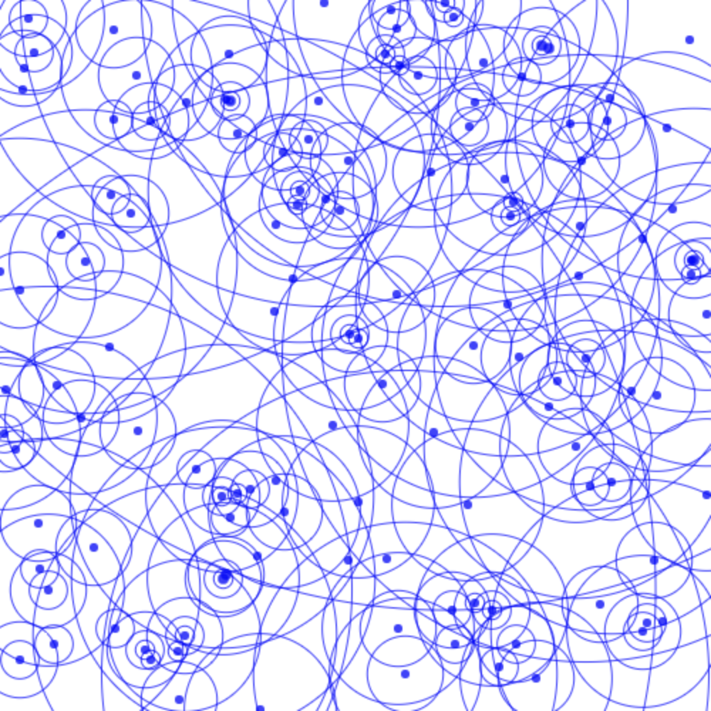
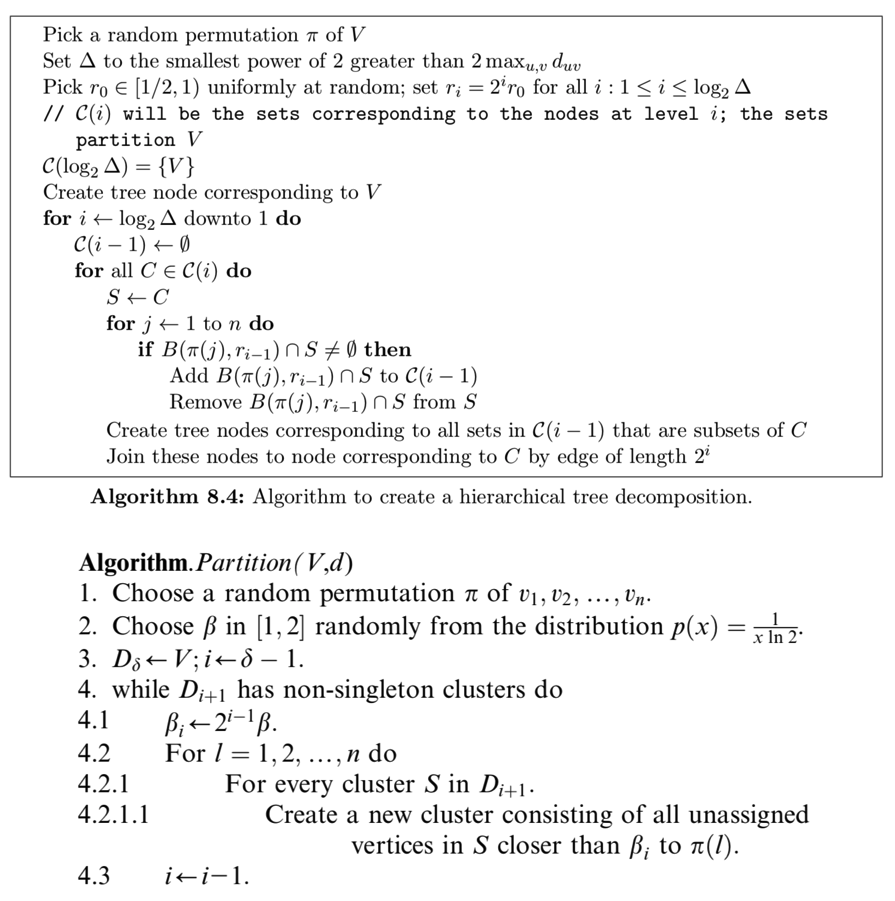
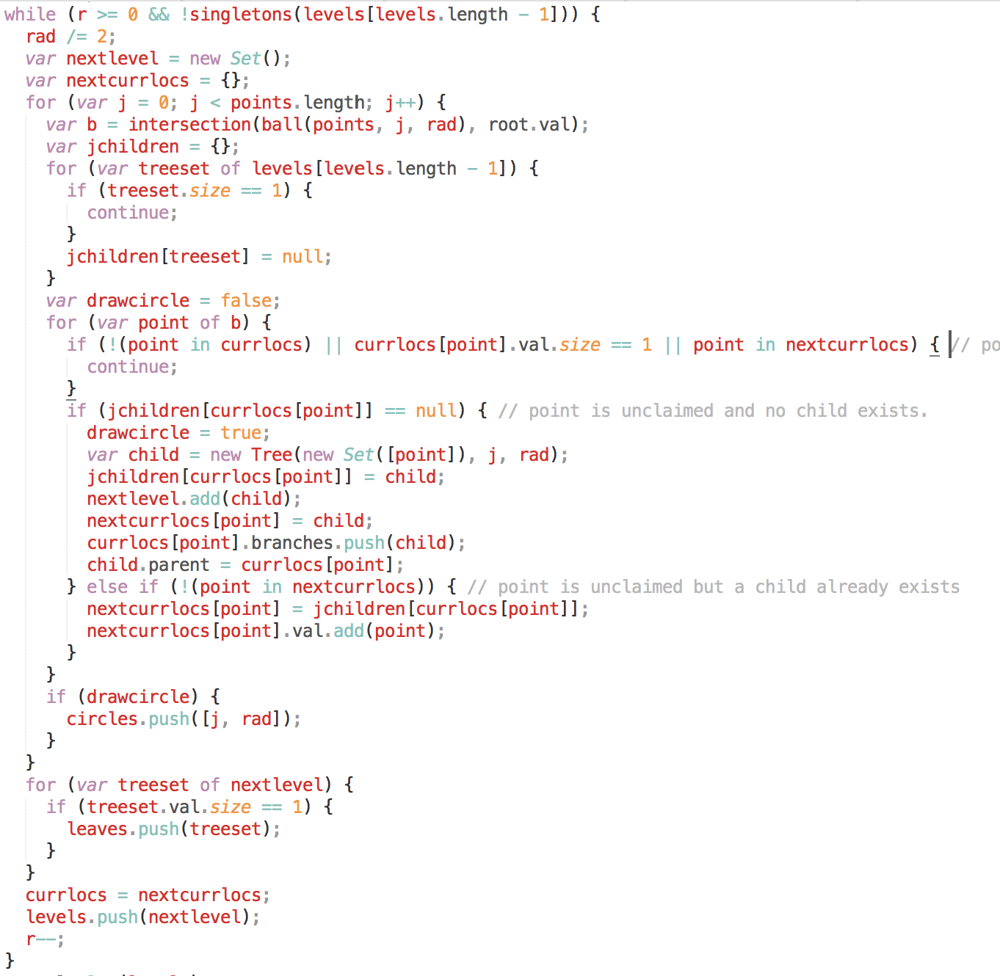
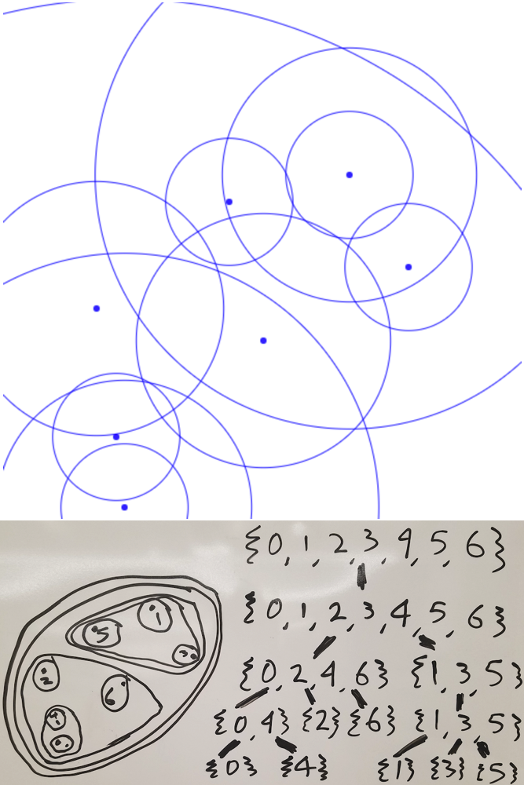
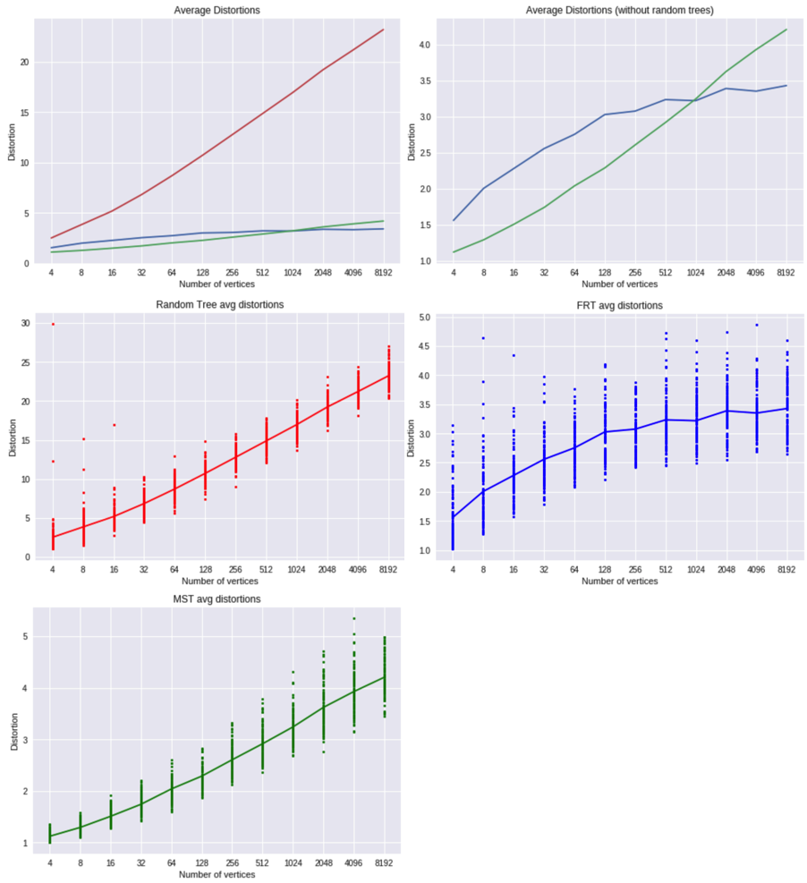
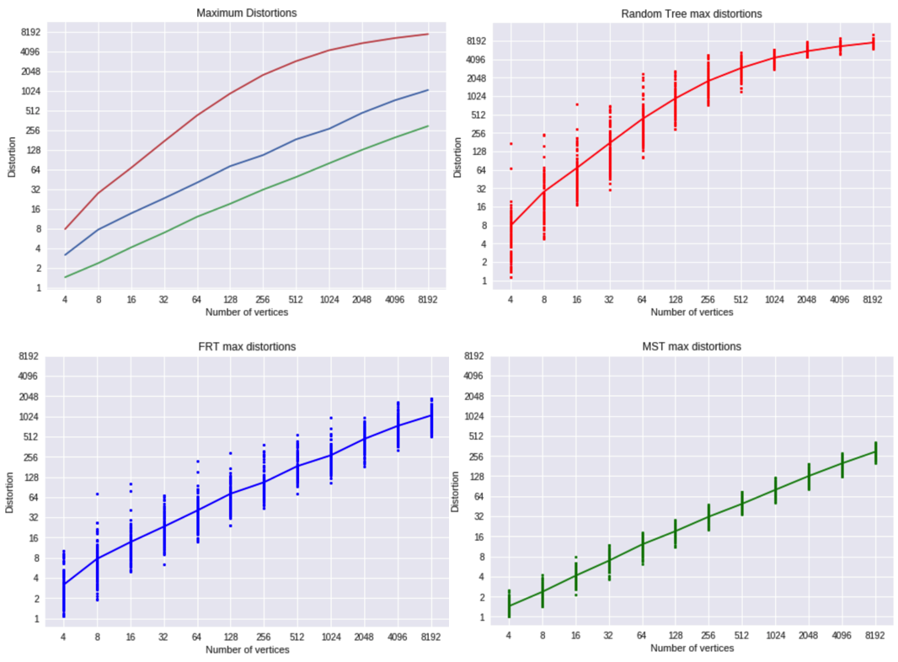
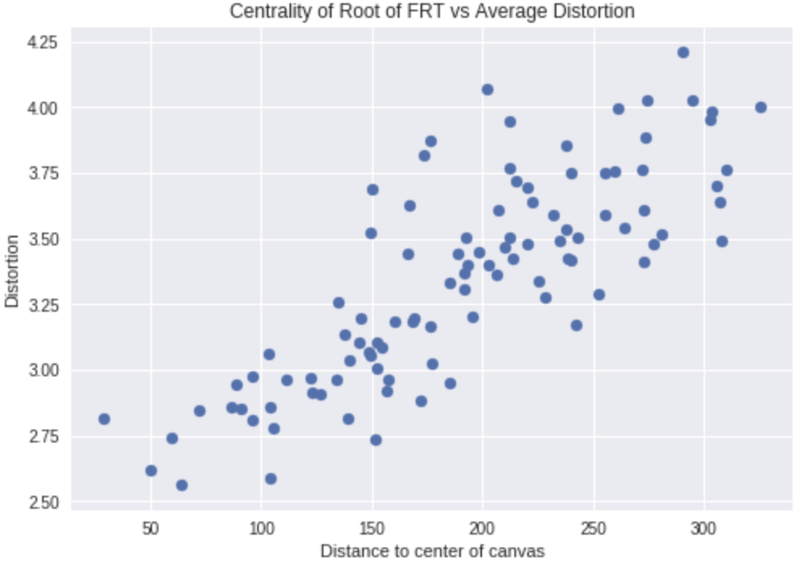

Another cool tool I learned in CS 294-145 (Approximation Algorithms) was low-distortion Fakcharoenphol-Rao-Talwar (FRT) trees. I wanted to implement them in an interactive environment instead of just in a Jupyter-or-terminal-like environment, so I've implemented them along with minimum spanning trees (Prim's and Kruskal's) and random spanning trees with HTML5 canvas and ReactJS. I also did some analysis on the average and maximum distortion with numpy, pyplot, and Google Colab.
The interactive demo is here, the Google Colab is here, and the scripts are in this part of my website repo.
Let's say you are given a set of vertices \(V\) and pairwise distances between vertices \(d\) (a space). If three conditions hold--distances from a vertex to itself is 0, distance from \(i\) to \(j\) is the same as from \(j\) to \(i\), and distance from \(i\) to \(j\) is shorter than \(i\) to \(j\) to \(k\) (the direct path is always fastest)--then the space is called a metric space. Real life is a metric space becase location is defined with three coordinates and distance is defined using an \(L_2\)-norm (as the crow flies). Suppose that instead of pairwise distances, we wanted to output points \(V\) on a tree, since some algorithms are easy to solve/approximate on trees. This is what a Fakcharoenhpol-Rao-Talwar tree tries to do: output a tree \(T\) where the distance between two vertices is directly is roughly the distance along the tree (\(T_{uv} \approx d_{uv}\)).
The factor by which the tree route is longer is called the distortion between the two vertices, and FRT trees are provably optimal for minimizing distortion on a metric space. Computing the exact optimal tree would take exponential time, however. More precisely, given \(n\) vertices, the expected distortion will be \(O(\log n)\) (\(E[T_{uv}] \leq O(\log n)d_{uv}\)). There might be a few vertices that have atrocious distortion.
the Fakcharoenphol-Rao-Tarjan algorithm forms a tree on a superset of nodes \(V' \supseteq V\), where the root node is the set of all vertices \(V\), and each node's children are a partition of it's parent node. This means all nodes form a laminar set, with the leaves being the original individual vertices.
It does this by creating a random permutation of vertices (to prevent adversarial inputs), and then generates each level of the tree one-by-one. Starting with a root node as the first "level", it examines each vertex in permuted order. At each vertex, it finds the ball of vertices of a certain radius (at each level the radius halves), and if any vertices in the ball are not yet in the next level, the vertices become a new child of the current node they reside in.
Here are two pseudocode versions of the above process, one from the original paper and one from Williamson's Design of Approximation Algorithms:
Not counting the number of levels (which is usually low, around 10), these run in \(O(n^3)\), which is just not very usable. However, you can speed it up to \(O(n^2)\) using some hashmaps and keeping track of what node vertices lie in. I've implemented the \(O(n^2)\) in javascript like so (no permutation because the points are already randomly placed):
This can all seem confusing, so I've visualized a small set of points here:
Note this picture does not include the outermost circle, which is outside the canvas window.
So, how good are the FRT trees versus something else? Well, it turns out there is another tree that minimizes distortion in its own way: minimum spanning trees!
The distortion of a pair of vertices \(u\) and \(v\) is \(\frac{T_{uv}}{d_{uv}}\). Minimum spanning trees use the smallest edges possible, so those edges set the distortion between close pairs of vertices, pairs that had the potential to have very high disortion, to 1. This pushes the maximum distortion value down, and the average distortion value with it.
Is there a tree we could compare these two techniques against? The random tree seems good enough: It's also the fastest of any trees so far: FRT runs in \(O(n^2)\), Prim's in \(O(n^2)\), Kruskal's in \(O(n^2 \log n)\), and random trees in \(O(n \log n)\) (similar to the coupon collector's problem).
Now for the comparison. To collect data, I created 100 trees of each type (FRT, prims, random (no Kruskals, should be basically the same as Prims here)) and number of vertices for powers of 2 between 4 and 8192. This took about 4 hours on a late 2017 13-inch macbook pro, so it would take 20 hours to include 16384 (the largest power of 2 before I reach the limit of 25000 points in a 500x500 canvas), and would take ~2 years if I used the \(O(n^3)\) implementation of FRT.
All of this data and charts are available in the linked Google Colab
From average distortions, it's immediately apparent random trees are much worse than MSTs or FRT trees. However, the average distortion is still logarithmic. This is not surprising; refering back to the equation: $$E[uv\text{-distortion}] \approx \frac{E[T_{uv}]}{E[d_{uv}]}$$ $$ = \frac{c \cdot E[\text{length of }uv\text{-path}]}{c}$$ $$ = \theta (\log n)$$
You can't exactly distribute the expectation to the numerator and denominator like I did (a simple example for this is if the numerator is always 1 but the denominator is either 0.1 or 1.9: half the time the result is 10, half the time it is ~0.5; a large variance in either term will push the expectation upward), but the skew shouldn't be too much. The important step here is that the expected length between a pair of points is logartihmic: this is because the average degree in a tree is just below 2 (\(|V|\) vertices and \(|V| - 1\) edges), so the number of vertices within \(d\) length is \(2^{\theta(d)}\). Set \(d\) to \(\log n\) and you can "reach" any point. This implies a log factor.
First, note that each axis is exponential, so a linear slope implies polynomial growth. In our max distortion category, we see MSTs outshine FRT trees, just like I explained earlier. It is still interesting that FRT trees hold a fairly constant 4 times the distortion of MSTs. With random trees, the ratio tapering is a bit harder for me to explain. The direct path for these worst-case outcomes is usually just a few pixels long, so it's possible the diminishing increases are from paths getting longer logarithmically but pairwise distances not growing.
Now, I wondered an interesting question: how does root placement in a FRT tree affect distortion? A lot of paths route through the root, so a more centrally located one should reduce average distortion.
Looks like my idea is confirmed! This suggests something like a quadtree would be effective. Perhaps I'll try that in the future.
Although FRT trees only advertise a \(O(\log n)\) distortion ratio, and although the FRT distortion was better than MST distortion for high \(n\), I can't help but be a little dissapointed in FRT trees. I simplified the distances between nodes in \(V'\) to be the distance between the two centers of the nodes instead of a power of two, but even then there were many cyclic chunks in paths between vertices. Apparently \(O(\log n)\) distortion is optimal, so I guess this is it.
For planes, I wonder if there is a better way to generate low-distortion trees. FRT trees work for any metric space, but a plane is much more constrained than a metric space.
Remember to check out the tool.